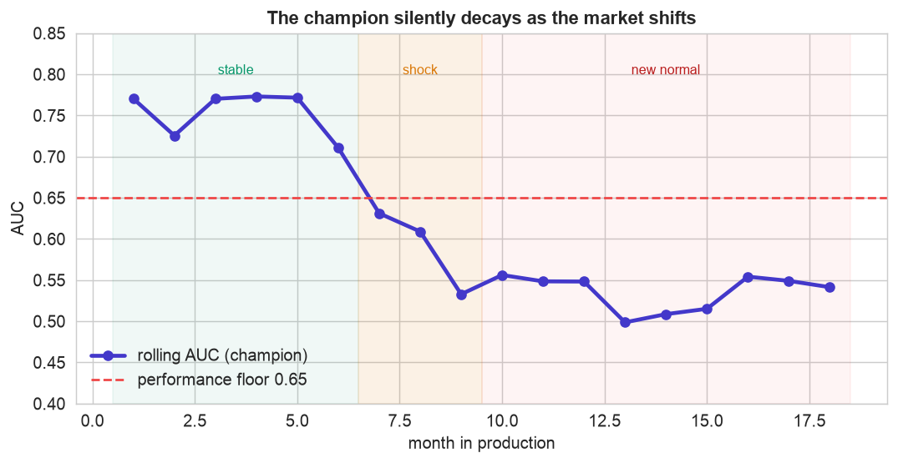
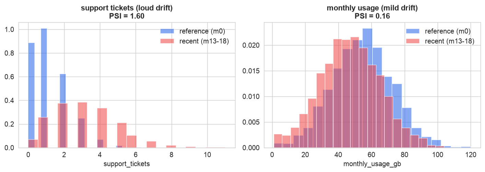
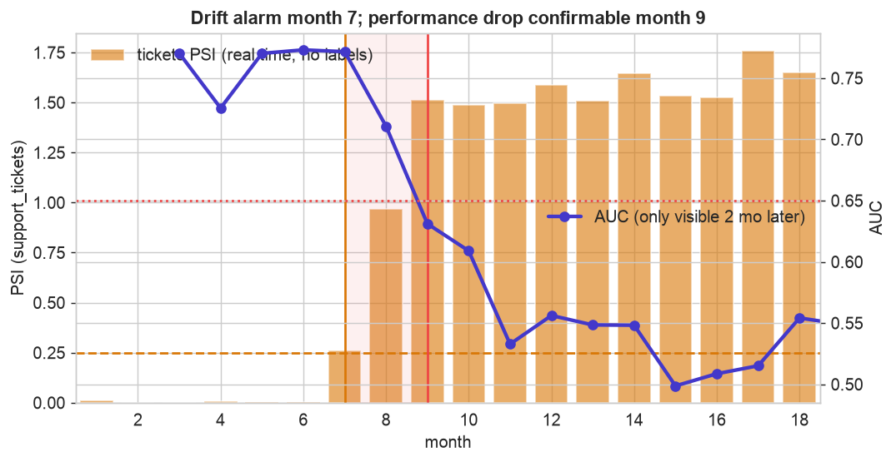
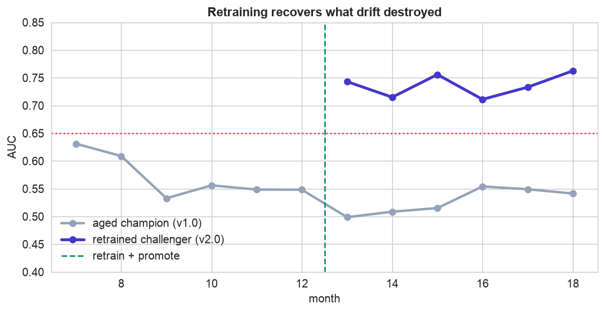
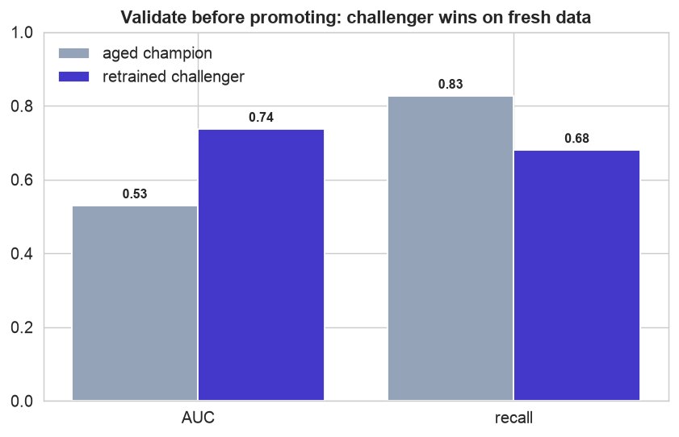

A model that scores 0.80 in a notebook and a model that keeps working for two years are different achievements. The second one requires MLOps: the discipline of running a model as a product. The reason it is hard has one name, drift. The data a model meets in production slowly stops looking like the data it trained on, and its accuracy quietly rots, with no error message. This chapter follows a churn model through 18 months as exactly that happens, and shows the loop that catches and fixes it.
Labels arrive late. You will not know your model's accuracy dropped until the churn outcomes come in months later, so the whole game is watching the inputs for drift (which needs no labels) and acting on that leading signal, before the lagging performance metric confirms the damage.
The 12-Step Method
The familiar loop, adapted to the production lifecycle. The companion notebook runs all twelve steps on the 18-month log; the sections below tell the story and show the plots.
A production log of a churn model: one row per customer scored in a given
month (0 = the training window, 1 to 18 = live), with tenure_months,
monthly_usage_gb, support_tickets, add_ons, monthly_charges,
price_increase, and the churned outcome that arrived later. A market shift starting month 7
drives both data drift and concept drift.
Define, Package, Serve, Log (Steps 1–4)
Define the production contract
Before deploying, write down what must stay true in production: a performance floor (retrain if rolling AUC falls below 0.65), a drift threshold (investigate any feature with PSI above 0.25), a latency budget, and, crucially, the label delay: churn is only confirmed about two months after we score. That delay is the whole reason the rest of this chapter is hard.
Package the champion
The deployable artifact is not just the model, it is the whole pipeline (imputer, scaler, classifier) so the exact preprocessing travels with the weights, bundled with metadata: a version tag, the training window, the feature list. Versioning is what makes a later rollback possible.
Serve it
A scoring service loads the artifact once and scores many rows, turning each probability into an action at the chosen threshold, fast enough to satisfy the latency budget.
Log every prediction
Each score is written to a prediction log with its inputs, the output, the model version, and, once known, the outcome. You cannot monitor what you did not log; this log is the raw material for everything that follows.
Monitor & Detect Drift (Steps 5–6)
Monitor performance
With outcomes attached, we can track the model's accuracy month by month. This is where the silent failure becomes visible.

Models decay silently. The champion holds around 0.77 for six months, then slides through the market shock to about 0.53, no better than a coin flip, and stays there. Nothing errored, no exception was thrown; the model just quietly stopped working as the world changed. Rolling metrics are what turn an invisible problem into a visible one.
Detect drift in the inputs
Because labels lag, we also watch the inputs directly. The Population Stability Index (PSI) compares each feature's current distribution to the training reference, and it needs no outcomes at all.

The inputs moved. Support tickets (left) have shifted dramatically since training, PSI far above the 0.25 alert line, while monthly usage (right) drifted only mildly. As a rule of thumb, PSI below 0.1 is stable, 0.1 to 0.25 is a watch, and above 0.25 is significant drift. The key point: this signal is available immediately, long before enough churn outcomes exist to measure accuracy.
Alert & Diagnose (Steps 7–8)
Alert on the leading signal
Here is the central MLOps insight, in one picture: input drift is a leading indicator, performance is a lagging one.

Watch the inputs, because labels are late. The PSI alarm fires at month 7, the instant tickets shift, using no labels. Performance actually dropped that same month, but churn outcomes lag two months, so the AUC breach is not confirmable until month 9. The shaded gap is time you would fly blind if you only watched accuracy. In production you act on the leading signal; waiting for the lagging one costs months of bad decisions.
Diagnose: data drift or concept drift?
The fix depends on which kind of drift you have. Data drift means the inputs moved but the underlying
relationship holds. Concept drift means the relationship itself changed, and only retraining can fix
that. Fitting a fresh model on recent data settles it: the coefficient on monthly_usage has
flipped sign (from about -1.0 to +0.4). Once, disengaged low-usage customers churned; now
high-usage customers hit the price increase and leave. The champion's learned rule is backwards, this is
concept drift, and retraining is the only cure.
Retrain, Validate & Roll Out (Steps 9–12)
Retrain a challenger, then validate it
The challenger is trained on the most recent stable window (months 10 to 12), after the shock settled, training on the whole muddled history would blend two contradictory regimes. Then we prove it works on data neither model has seen.

Retraining recovers what drift destroyed. The aged champion (grey) stays stuck near 0.53 in the new regime. The retrained challenger (indigo), promoted after month 12, jumps back to about 0.74 on the very same months, because it learned the new, inverted relationship. Retraining is the concrete fix for concept drift.

Never promote on faith. On held-out recent data (months 13 to 18), the challenger beats the aged champion decisively on AUC (about 0.74 vs 0.53). Only a win this clear, on data the challenger did not train on, justifies promotion. A challenger that merely ties is not worth the disruption of a model change.
Roll out safely, then govern the loop
A safe rollout is gradual, and it is where most production incidents are prevented.
Shadow mode scores live traffic without acting on it; a canary routes a small slice (here 20%) to the challenger and compares. In the notebook's canary, the challenger arm scores 0.79 against the champion's 0.50, so we widen it. A rollback rule stays armed throughout: if the new model underperforms, traffic reverts to the versioned champion automatically. Finally, governance closes the loop: the promoted challenger becomes the new champion (v2.0), it scores fresh customers correctly under the new relationship, and monitoring begins again. The loop never ends.
Govern: the Plain-English Write-Up (Step 12)
For a non-technical reader
What is this? A worked example of keeping a prediction tool working after it is switched on. Our tool flags customers likely to cancel. This project follows it for 18 months and shows how we notice when it goes stale and how we refresh it, without ever taking it offline.
What goes in, and what comes out
Inputs: a running log of every customer the tool scored, plus the features it saw and whether they eventually cancelled. Output: not a single model, but a routine, a dashboard of health checks and a rule for when to rebuild and re-launch the tool.
The decisions we made, and why
- ✓We watched the incoming data, not just the results. Because we only learn who actually cancelled months later, waiting for results would leave us blind. Watching the inputs shift gave us a two-month head start.
- ✓We worked out why it broke. The tool did not have a bug; the world changed. A price increase flipped the pattern, so customers who used to be safe were now the ones leaving. When the pattern itself changes, the only fix is to rebuild the tool on fresh data.
- ✓We proved the rebuilt tool was better before trusting it, and rolled it out to a small slice of customers first, ready to switch back instantly if it disappointed.
The big idea
The model was the easy, one-time part. The real work was building the loop that keeps it honest. In the end: a deployed model is not finished, it is on the clock. The world drifts, so the true deliverable is the closed loop that watches for decay and renews the model, not the model itself.
Run the entire lifecycle in Python
The companion notebook is the full 12-step MLOps loop: it packages and serves the champion with joblib, logs predictions, tracks rolling AUC as the model decays, computes PSI to detect drift without labels, shows input drift leading performance by two months, diagnoses the concept drift via a flipped coefficient, retrains and validates a challenger, runs a canary with a rollback rule, and promotes v2.0, with every step explained.
View opens the rendered notebook instantly.
Open in Colab runs it live. To run locally, install numpy, pandas,
matplotlib, seaborn, scikit-learn, and joblib.
🎓 Key Takeaways
- ✓Deployment is the halfway point: a model in production is a living system that must be packaged, served, logged, and watched.
- ✓Models decay silently: the champion slid from 0.77 to 0.53 with no error, only rolling metrics revealed it.
- ✓Watch inputs, not just performance: PSI flagged drift at month 7, two months before the accuracy drop could be confirmed.
- ✓Diagnose before fixing: a flipped coefficient meant concept drift, so retraining, not recalibration, was the cure.
- ✓Retrain, validate, roll out safely: a challenger on fresh data (0.74 vs 0.53), promoted via canary with a rollback armed, and the loop restarts.
Take It Further
Five ways to extend the lifecycle in the notebook:
A second drift test
Cross-check PSI with the Kolmogorov-Smirnov test; do they agree on which features moved?
scipy.stats.ks_2samp(ref, recent).Watch the model's own output
Monitor the distribution of predicted scores over time, a label-free warning.
predict_proba, not the features.How often to retrain?
Compare never, monthly, and triggered retraining on cost versus performance.
A rollback drill
Ship a deliberately bad challenger and confirm the canary plus rollback rule catch it.
When is it safe to promote?
Run the challenger in shadow and find the month it overtakes the champion.
All five, worked in a companion notebook
A second notebook, Take It Further, rebuilds this chapter's champion and works every extension with visuals and explanations, a KS-test drift check, label-free prediction-drift monitoring, a retraining-cadence comparison, a rollback drill that catches a bad challenger, and a shadow evaluation that pinpoints when to promote, closing with a plain-English summary.
Quiz: Test Yourself
Eight questions on deployment, drift, monitoring, and the retraining loop. Answer them, hit Check Answers, and keep refining until you score 100%. Your progress is saved, so you can hop back to the chapter and return anytime.
That closes the ML Case Study, seven end-to-end projects from a first model to a self-renewing production system. Next the book turns to data that moves through time. Components of a Time Series opens Time Series & Forecasting with trend, seasonality, cycles, and stationarity.